既存のToDoアプリや健康管理アプリは、私にとって不要な機能が多かったり、逆に「これが欲しい！」という機能が無かったりと、広告に邪魔されながら、また課金をしてまで使うべきなのか悩ましい問題でした。特に、スマホとPC間でデータを即時共有できない点が一番のストレスでした。
そこで「自分に必要な機能だけを詰め込んだアプリを自作すればいい」と思い立ち、ToDoと健康管理を1つにまとめたアプリの開発をスタートしました。
最初はiOSアプリとして開発しiCloudで連携する予定でしたが、維持コストの観点から断念。将来的に「もっと良いアプリ」を見つけたときにいつでも気軽に乗り換えられるよう、固定費（サーバー代など）がかからない完全無料の構成にこだわりました。最終的にブラウザ上で軽量に動くPWA（Progressive Web Apps）形式に落ち着き、インフラにはGitHubとVercelを活用しています。
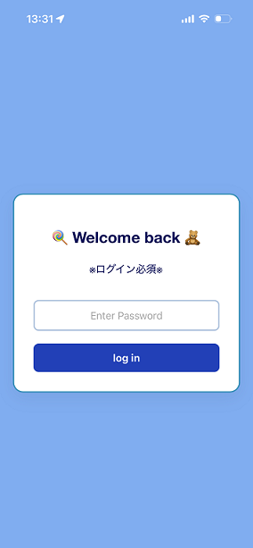
私自身しか使わないため、ログイン機能にはVercelの環境変数を活用した簡易的なパスワード認証を実装し、最低限のセキュリティを確保しています。
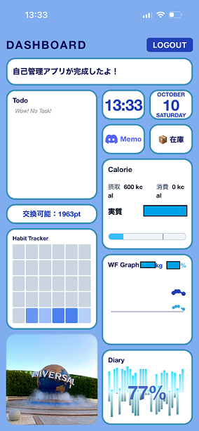
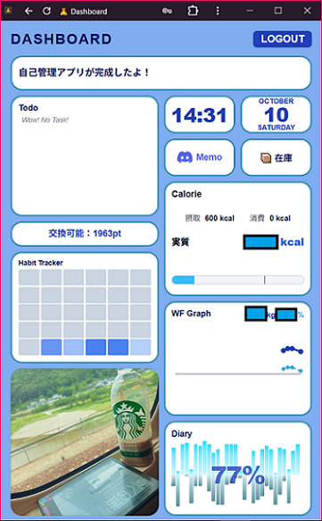
一目で今の自分の状態（タスク、カロリーなど）を把握できるよう、タイル状のダッシュボードを採用しました。左下のエリアでは、アプリを開くたびにランダムで写真が表示されます。
スマホ版はスクロールせずに全体を見渡せるコンパクトな設計にしており、PCで使う際も画面の端に常駐させてチラッと確認できるように同じレイアウトで構成しています。
（※普段はPCから使用することが多いため、PC版のレイアウトは完璧に修正し終えました。なのに今回ご紹介する画面は、レイアウトが一部ズレたままのスマホ版です。なぜ！！）
それでは、各機能をご紹介します。
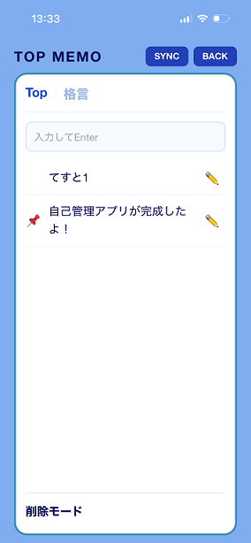
トップ画面に表示するメモを管理する機能です。タップで📌（ピン）を1つ固定すると、それがトップ画面のメインエリアに常に表示されます。
「今週末は旅行！」といったテンションの上がる言葉をピン留めしたり、メモが空のときは登録してあるお気に入りの格言がランダムで表示される仕様にしています。
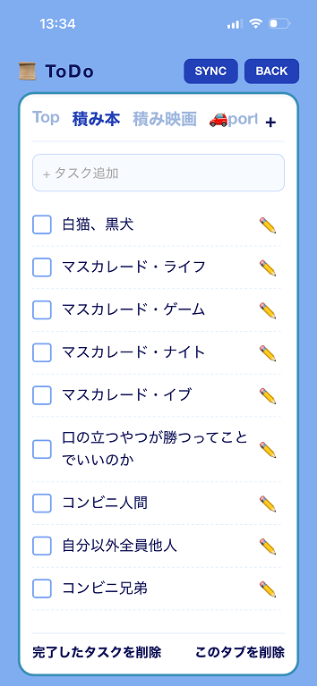
非常にシンプルなタスク管理機能です。登録できるのはタイトルのみで、サブタスク（ツリー化）や期限設定などの複雑な機能はあえて削ぎ落としました。また「積み本」「積み映画」といったタブ分けが可能です。
「Top」タブに登録したタスクは、前述のトップ画面に反映されます。
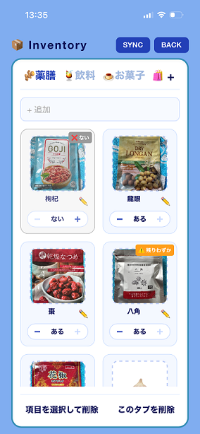
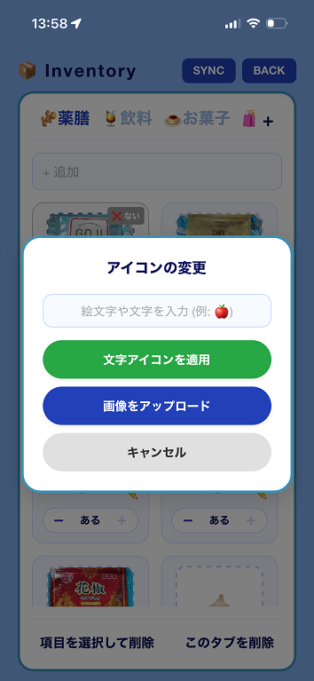
食品や日用品のストックを管理する機能です。画像や絵文字を登録して、ひと目で何があるか分かるように工夫しています。
開発当初は個数を入力で管理していましたが、入力漏れや実際の在庫とズレていくトラブルが発生したため、「ある・残りわずか・ない」の3択に割り切ったシンプルな仕組みに変更しました。快適です。
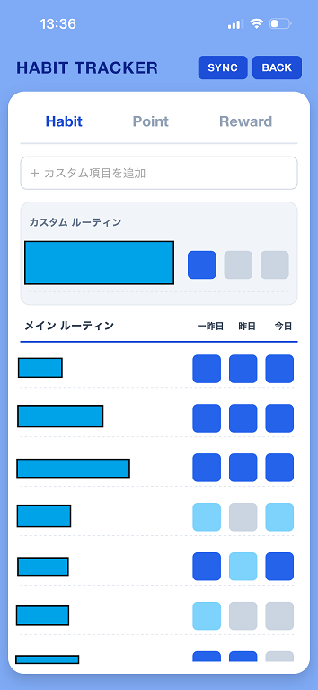
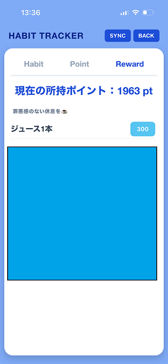
毎日の習慣達成度を記録する機能です。「完全達成（青）」や「一部達成（水色）」のように色で直感的に記録できます。何％達成できたかがトップ画面に反映されます。
また、習慣を達成するとポイントが貯まり、設定した娯楽と交換できるゲーム要素を取り入れました。「罪悪感なく娯楽を楽しむためのルール」ですが、現状はポイントが貯まりやすくズルし放題なので、今後バランスを調整する予定です。
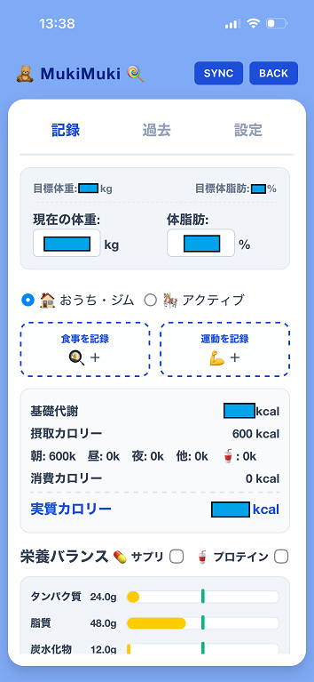
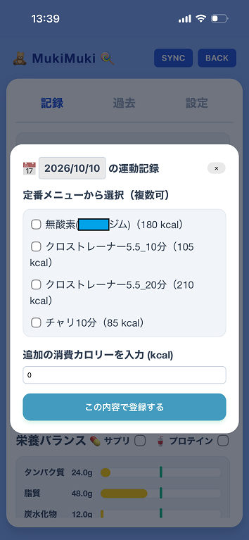
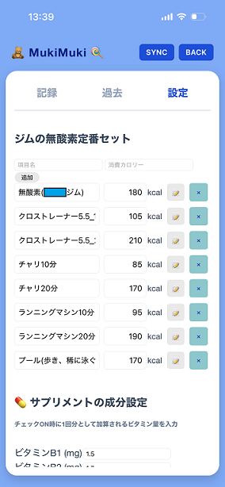
体重・体脂肪の記録枠と、食事のカロリー・栄養素を記録する枠で構成されています。食べたもののカロリー計算にはAI（Gemini API）を活用しています。
サプリ・プロテインや、定番の運動（ジムなど）による消費カロリーは、設定タブにあらかじめ数値を登録しておくことでワンタップで入力可能です。厳密な管理というより「食べ過ぎを防ぐ・可視化する」くらいのゆるいスタンスで運用しています。
因みに左上のタイトル「MukiMuki」は将来の理想です。
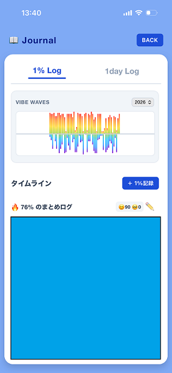
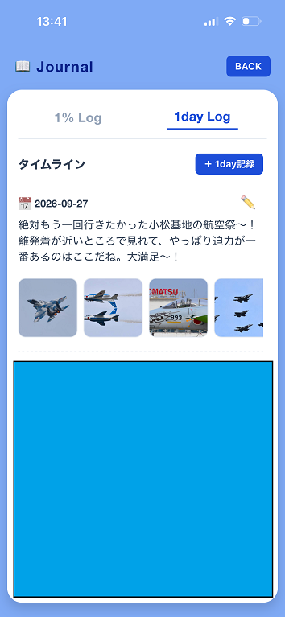
日記は気分や用途に合わせて2種類の方法で書き分けられるようにしました。
【1% Log】
1年（365日）を100%とし、約3.6日（1%）ごとに日常をまとめて記録する方法です。「毎日書くのはしんどいけれど、1週間ごとだと間が空きすぎる」という私にピッタリなペース感です。内容のポジティブ/ネガティブ比率をAI（Gemini API）が分析し、感情の波形グラフとして可視化できます。
【1day Log】
イベントがあった日など、書きたいときだけ書く従来スタイルの日記です。写真添付にも対応しており、特別な思い出をシンプルに残せるようになっています。
・日付と時計は表示されているだけで、特別な機能はありません。
・MEMOタイルは、普段メモ帳として使用しているDiscordチャンネルへ移動するリンクボタンになっています。
今回は一般公開する予定のない自分専用アプリということもあり簡易的なご紹介となりました。
ここまで読んでくれたあなたも、自分の為だけにアプリを作ってみませんか？